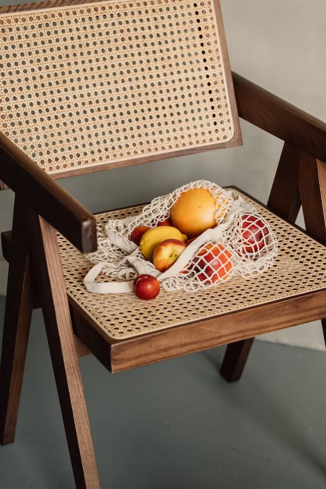

Hi! I'm Ada, a graduate student specializing in UX design/research at the University of Michigan.
What does a sunflower symbolise? Sunflowers symbolise loyalty, adoration thanks to the myth of Clytie and Apollo. And, because of their association with the sun, sunflowers are well-known for being a happy flower and the perfect bloom for a summer flower delivery to brighten someone's mood!
How to Plant Sunflower Seeds. Plant the seeds no more than an inch deep and about 6 inches apart. Thin the seedlings once they hit 6 inches tall, leaving the strongest plants about 12 inches apart. For continuous blooms, stagger your planting, sowing a new row of seeds every two to three weeks, beginning in the spring.

Not long ago, a study revealed that millions of Americans lose work yearly out of problems associated with back pains. The ever-growing number is alarming. Luckily, back pains are treatable and avoidable. According to health experts, the best remedy for reducing this problem is investing in a comfortable office chair. Without saying much, here are the top benefits that come with finding a quality office chair.
Riser recliners for the elderly can assist in safe standing and sitting, enabling more daily activity and less sedentary sitting. They can be a huge benefit to people who might tire quickly, and where pain is variable. For this reason, they are an especially good chair for old people.